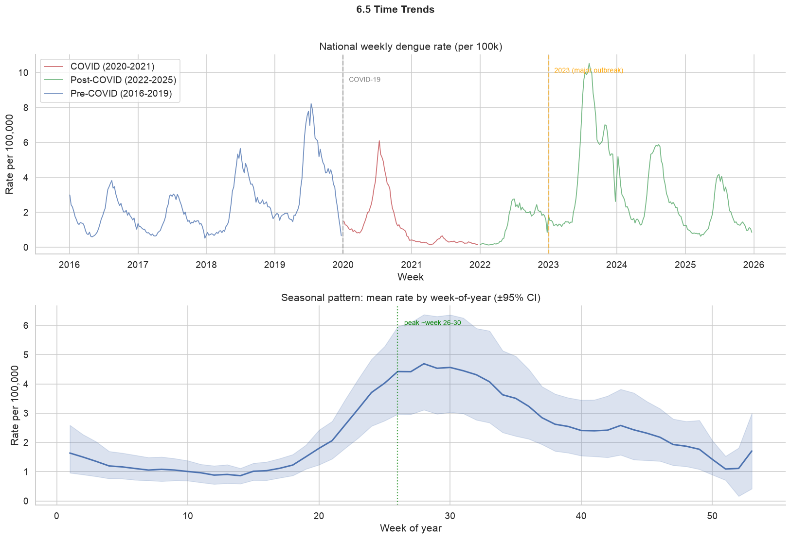
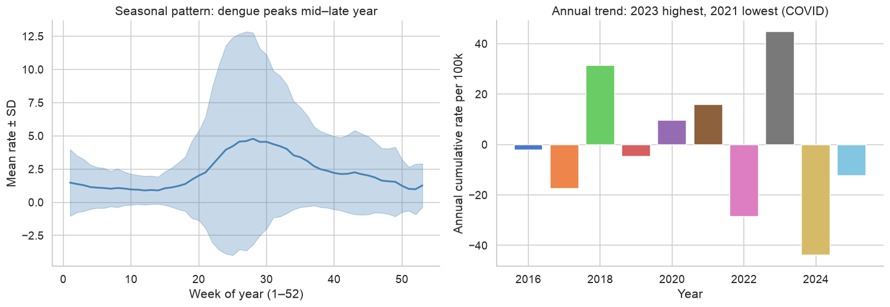
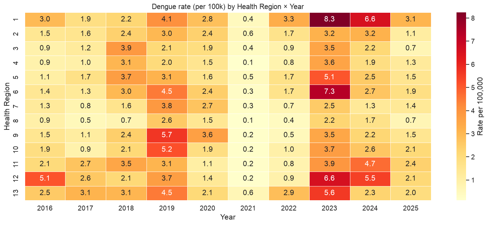
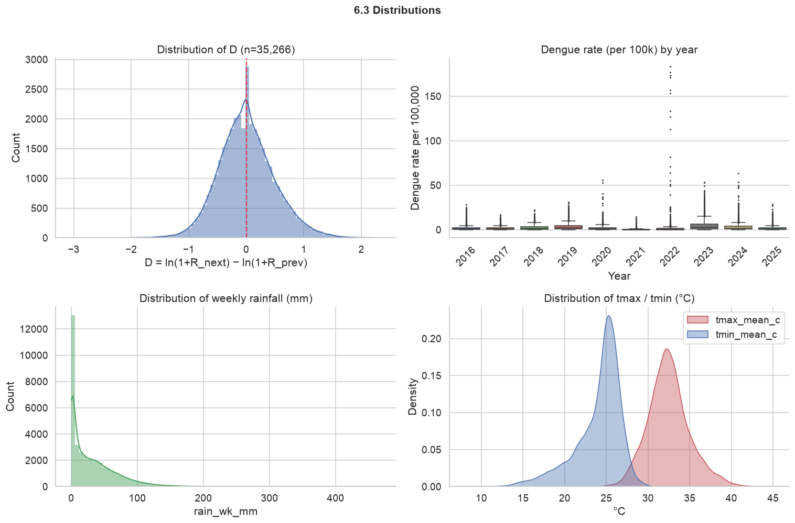
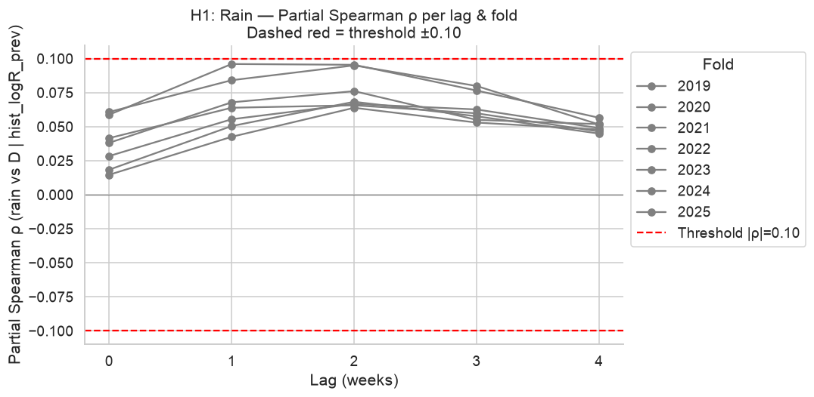
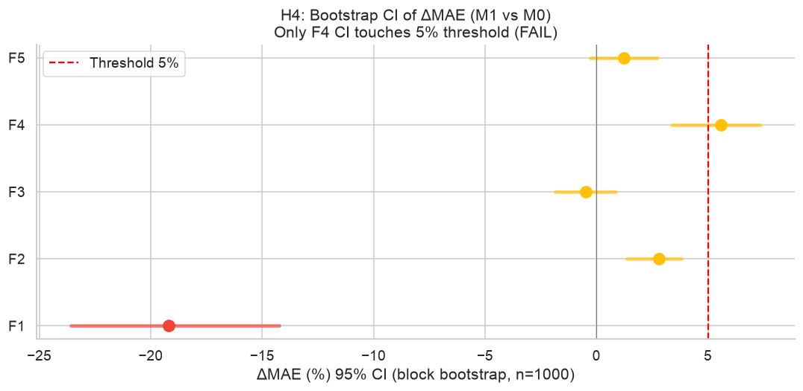

A 10-year province-level forecasting study across Thailand
A causal forecasting study asking: do weather variables — rainfall and temperature — improve dengue fever predictions 4 weeks ahead across all 77 Thai provinces? The project spans the full data-engineering lifecycle, from raw Excel ingestion to statistical hypothesis testing and online learning simulation.
A 5-stage ETL pipeline (ingest → validate → transform → load → export) with deterministic schema checks at every step. Weather data is auto-fetched from Open-Meteo ERA5 for all 77 province centroids and cached locally. All runs are append-only with full audit log and schema versioning in DuckDB.
Features are built entirely in SQL across 6 groups: province disease history (lag 0–3), national trend, Fourier seasonality (k=1..3), health-region dummies (13 regions), raw weather lags (0–4 wk), and weather anomaly — deviation from each fold's training climatology to prevent leakage. M0 = 26 features; M1 = 56 features.
Four pre-registered hypotheses tested on 5 expanding-window folds (train 2016–N, test N+1, 4-week gap). Pass criteria are strict: Spearman |ρ| ≥ 0.10 in ≥4/5 folds for H1/H2; MAE reduction ≥5% with CI not crossing zero for H4. Sensitivity analysis repeated with ElasticNet, XGBoost, and TabM-mini.
Real-time simulation of LR + ARIMA per province with CUSUM drift detection (Page 1954). When MAE degrades persistently, the pipeline retries 4 window sizes (4/24/56/112 wk) and replaces the model only if the challenger beats the current one. ARIMA triggers frequently but rarely improves — the 3-year initial model is hard to beat with short windows.
Clone the repo, provide TRENDS.xlsx (from Thailand's DDC), and follow five steps to open the dashboards locally.
We tested four hypotheses across 5 expanding-window folds. Here is what the data said.
Weather does not improve dengue forecasting in this dataset.
max |ρ| = 0.075, threshold 0.10 — no consistent signal across folds
No consistent directional effect across test folds
Inconclusive — requires H1 or H2 to pass first
M1 beat M0 in only 1/5 folds, far below the ≥4/5 threshold
A reproducible, audit-logged ETL pipeline connecting two data sources into a contract-validated 44-column dataset.
Weekly dengue / chikungunya / HFMD · 77 provinces · 2 Excel sheets · 2016–2025
Daily rain · Tmax · Tmin · Province centroids · 283,822 rows · reanalysis weather
Key charts from the EDA notebook — dengue outbreak patterns, weather correlations, and hypothesis evidence.






Two feature sets, three model families, evaluated across 5 expanding-window folds. Seed = 342.
Disease history lags 0–3 · national rate · Fourier seasonality · region dummies
M0 + raw weather lag 0–4 + weather anomaly per fold (fit on train only)
3 params · no weather · beats all ML models across all 5 test folds
Two interactive dashboards with the full analysis.
Full hypothesis testing results, fold-by-fold MAE breakdown, correlation profiles, and bootstrap confidence intervals.
Adaptive walk-forward forecasting with CUSUM drift detection, comparing LR and ARIMA under concept drift.